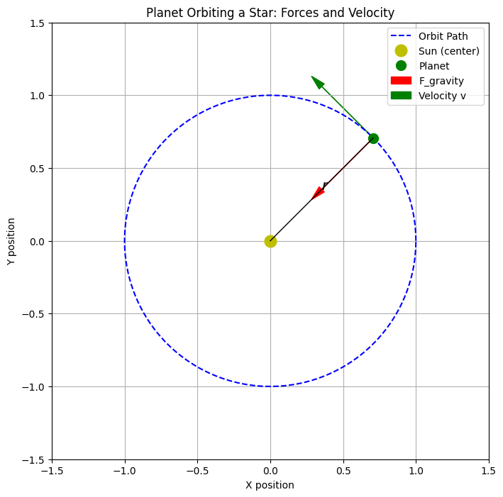
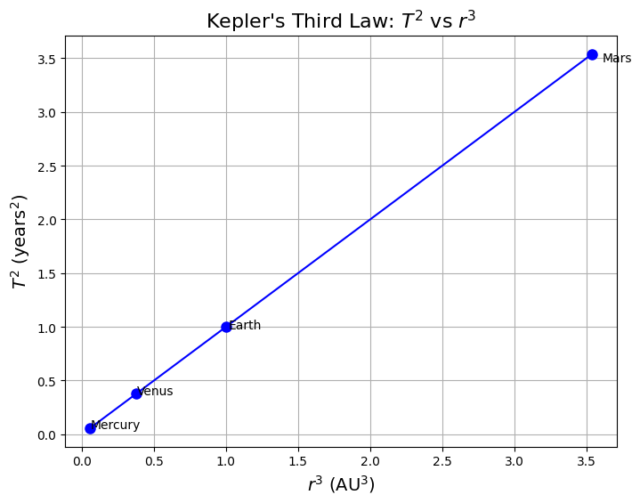

Problem 1
Orbital Period and Orbital Radius
Derivation, Simulation, and Application of Kepler's Third Law
1. Introduction
The relationship between the orbital period \(T\) and the orbital radius \(r\) of celestial bodies is described by Kepler's Third Law.
It was later derived using Newton's Law of Gravitation, providing a deep connection between gravity and orbital motion.
In this document, we: - Derive the relationship mathematically, - Simulate the relation using planetary data, - Calculate the mass of the Earth and Sun using Kepler’s Law, - Discuss the law's application to elliptical orbits.
2. Derivation of Kepler’s Third Law for Circular Orbits
Starting with Newton’s Law of Gravitation:
The centripetal force needed for circular motion is:
Setting them equal (gravity provides centripetal force):
Simplifying:
The orbital period \(T\) relates to velocity \(v\) by:
Substituting:
Expanding:
Multiplying both sides by \(r\):
Finally, solving for \(T^2\):
Thus:

3. Simulation and Plotting \(T^2\) vs \(r^3\)
We verify the relationship using planetary data (Mercury, Venus, Earth, Mars).
3.1 Python Code
# Import necessary libraries
import numpy as np
import matplotlib.pyplot as plt
# Planetary data
planets = ['Mercury', 'Venus', 'Earth', 'Mars']
r_AU = np.array([0.387, 0.723, 1.000, 1.524]) # Orbital radii (AU)
T_years = np.array([0.241, 0.615, 1.000, 1.881]) # Orbital periods (years)
# Compute r^3 and T^2
r_cubed = r_AU**3
T_squared = T_years**2
# Plotting
plt.figure(figsize=(8,6))
plt.plot(r_cubed, T_squared, 'o-', color='blue', markersize=8)
for i, planet in enumerate(planets):
plt.text(r_cubed[i]*1.02, T_squared[i]*0.98, planet, fontsize=10)
plt.xlabel(r"$r^3$ (AU$^3$)", fontsize=14)
plt.ylabel(r"$T^2$ (years$^2$)", fontsize=14)
plt.title(r"Kepler's Third Law: $T^2$ vs $r^3$", fontsize=16)
plt.grid(True)
plt.show()

3.2 Interpretation
The plot of \(T^2\) against \(r^3\) is a straight line, confirming that \(T^2 \propto r^3\).
This matches the theoretical derivation and validates Kepler’s Third Law.
4. Applications: Mass Calculations
4.1 Finding the Mass of the Sun
Using Earth's orbit:
- Orbital radius: \(r = 1.496 \times 10^{11}\ \text{m}\)
- Orbital period: \(T = 3.154 \times 10^{7}\ \text{s}\)
The mass of the Sun is given by:
where \(G = 6.67430 \times 10^{-11}\ \text{m}^3 \text{kg}^{-1} \text{s}^{-2}\).
Code to Find Mass of Sun
# Constants
G = 6.67430e-11 # Gravitational constant (m^3/kg/s^2)
r_earth = 1.496e11 # Orbital radius of Earth (m)
T_earth = 3.154e7 # Orbital period of Earth (s)
# Calculate Mass of Sun
M_sun = (4 * np.pi**2 * r_earth**3) / (G * T_earth**2)
print(f"Mass of the Sun = {M_sun:.3e} kg")
Result:
Mass of the Sun \(\approx 1.99 \times 10^{30}\ \text{kg}\)
4.2 Finding the Mass of the Earth
Using the Moon's orbit:
- Orbital radius: \(r = 3.844 \times 10^{8}\ \text{m}\)
- Orbital period: \(T = 2.3606 \times 10^{6}\ \text{s}\)
Code to Find Mass of Earth
# Moon orbit data
r_moon = 3.844e8 # Orbital radius of Moon (m)
T_moon = 2.3606e6 # Orbital period of Moon (s)
# Calculate Mass of Earth
M_earth = (4 * np.pi**2 * r_moon**3) / (G * T_moon**2)
print(f"Mass of the Earth = {M_earth:.3e} kg")
Result:
Mass of the Earth \(\approx 5.97 \times 10^{24}\ \text{kg}\)
5. Extension: Elliptical Orbits
For elliptical orbits, Kepler’s Third Law becomes:
where \(a\) is the semi-major axis of the ellipse.
Thus, \(T^2\) is proportional to \(a^3\) even for non-circular (elliptical) orbits.